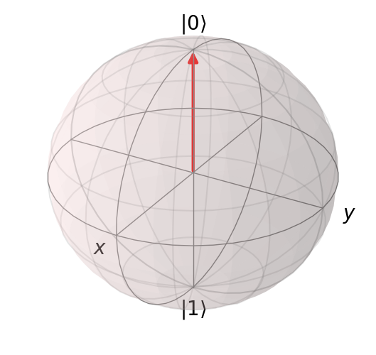
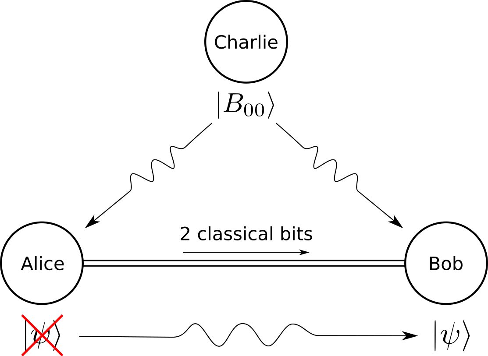

Tutorial
In this tutorial we will introduce NetSquid and its features using quantum teleportation as an example. We will start with the basis for a quantum network, qubits, and build from there towards simulating a network consisting of multiple components running several protocols. We go quite in depth into each topic. For full examples, but not as in-depth, we refer you to the examples.
The tutorial is built up from several smaller tutorials for each topic. You can go step-by-step through them, or read the ones that are relevant for you:
For those unfamiliar with quantum teleportation we will introduce it shortly below, otherwise you can continue with the first section of the tutorial.
Quantum information
In classical information theory, the most basic unit of information is the two-state system: a bit which can be 0 or 1. The quantum analogue is the quantum bit or qubit, created using a two-state quantum-mechanical system. An example system is a single photon of which the two states can be the horizontal and vertical polarisation. Instead of being either 0 or 1, a qubit can be in a so called superposition (or linear combination) of the two states, i.e. \(\alpha \vert 0 \rangle + \beta \vert 1 \rangle\). With \(\vert \alpha \vert^2 + \vert \beta \vert^2 = 1\) and \(\alpha, \beta \in \mathbb{C}\). You can thus see the qubit as a vector of length 1. All such possible vectors lie on the surface of a sphere as shown in the figure below. This sphere is called the Bloch sphere.
{kind=link}
However, when measuring a qubit it is only possible to get one of two possible outcomes, either 0 or 1. The measurement is a projection of the vector in some (orthogonal) basis. For example most measurements are done in the computational basis (also called the standard basis or the Z basis): \(\{\vert 0 \rangle, \vert 1 \rangle\}\). By measuring the superposition is lost and the state of the qubit is fixed to the state of the measured outcome, either \(\vert 0 \rangle\) or \(\vert 1 \rangle\). Another common base to measure in is the X basis: \(\{\vert - \rangle, \vert + \rangle\}\). With \(\vert - \rangle = \frac{\vert 0 \rangle - \vert 1 \rangle}{\sqrt{2}}\) and \(\vert + \rangle = \frac{\vert 0 \rangle + \vert 1 \rangle}{\sqrt{2}}\).
Besides superposition, a qubit has two other quantum mechanical properties which can be used for quantum communication and computation. First, a qubit encodes quantum information that contrary to classical information cannot be copied (no-cloning theorem). Secondly, qubits can be entangled, which means that for a set of entangled qubits the state of each qubit cannot be described independently of the state of the other qubits it is entangled with. This entanglement is the starting point for quantum teleportation.
Quantum teleportation
With quantum teleportation a qubit can be moved between different locations without physically transporting the particle (e.g. a photon or electron) representing the qubit. Teleportation starts with a pair of maximally entangled qubits (an EPR pair, denoted by \(B_{00} = \frac{\vert 00 \rangle + \vert 11 \rangle}{\sqrt{2}}\) in the figure below) shared between the sender Alice and the receiver Bob. Alice creates a qubit (in state \(\vert \psi \rangle\)) to be teleported and measures it together with her part of the EPR pair in a so called Bell measurement. This results in one of four outcomes: 00, 01, 10 or 11. Alice sends the outcome represented by two classical bits over a classical communication channel to Bob. Based on the message received by Bob, he performs one of four single-qubit correction operators on his part of the EPR pair, resulting in his qubit being in the same state as created by Alice.
{kind=link}
See also
For a more extended introduction you can check for example this QuTech blog, the book by Nielsen and Chuang [Nielsen, M. A., & Chuang, I. L. (2016). Quantum computation and quantum information. Royaume-uni: Cambridge University Press.] or this YouTube video by Nielsen.
What is next?
In the next section you will see how qubits are created and manipulated using NetSquid.